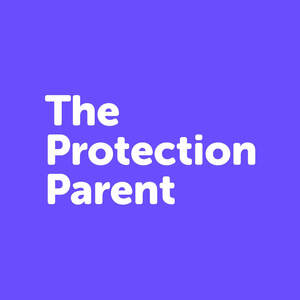
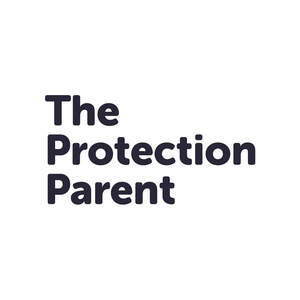

Trade Mark Journal No.2025/047 21 November 2025
UK00004289063 4 November 2025 (36)
Mark 1

Mark 2

- Class 36
- Insurance; Insurance underwriting; Underwriting (Insurance -); Health insurance; Health insurance underwriting; Insurance underwriting in the field of professional liability insurance; Accident insurance underwriting; Medical insurance; Insurance broking; Insurance brokerage; Brokerage (Insurance -); Brokerage of insurance; Accident insurance; Non-life insurance underwriting; Provision of insurance services to insurance companies; Accident insurance underwriting services; Automobile accident insurance underwriting; Insurance services; Brokerage of non-life insurance; Insurance underwriting services; Underwriting of insurance (Services for the -); Underwriting of health insurance (Services for the -); Life insurance underwriting; Insurance actuarial services; Insurance agencies; Insurance for businesses; Life insurance; Professional indemnity insurance; Insurance consultancy; Insurance underwriting consultancy; Life insurance brokerage; Credit services for the payment of insurance premiums; Credit services for payment of insurance premiums; Insurance brokering; Private health insurance; Insurance brokers (Services of -); Mortgage banking insurance; Insurance administration; Underwriting of company insurance (Services for the -); Underwriting of personal accident insurance (Services for the -); Insurance information; Information (Insurance -); Insurance consultation; Underwriting of credit insurance (Services for the -); Insurance advice; Life insurance agencies; Insurance research; Research (Insurance -); Consultations [insurance]; Insurance brokerage services; Insurance agency and brokerage; Underwriting of business insurance (Services for the -); Arranging of insurance; Arranging insurance; Insurance (Arranging of -); Medical insurance brokerage services; Insurance brokerage for property; Insurance services for the protection of mortgages; Underwriting insurance for pre-paid legal services; Insurance agency services; Insurance services for the protection of drivers; Home insurance services; Household insurance services; Administration of insurance claims; Provision of mortgage loan insurance; Personal insurance services; Insurance management services; Administration of insurance plans; Insurance plans (Administration of -); Administration of insurance business; Arranging of life insurance; Insurance risk management; Insurance advisory services; Insurance services for the repayment of medical expense; Insurance arranging services; Insurance information and consultancy; Administration of insurance portfolios; Home contents insurance; Insurance consultation services.
THE PROTECTION PARENT LTD